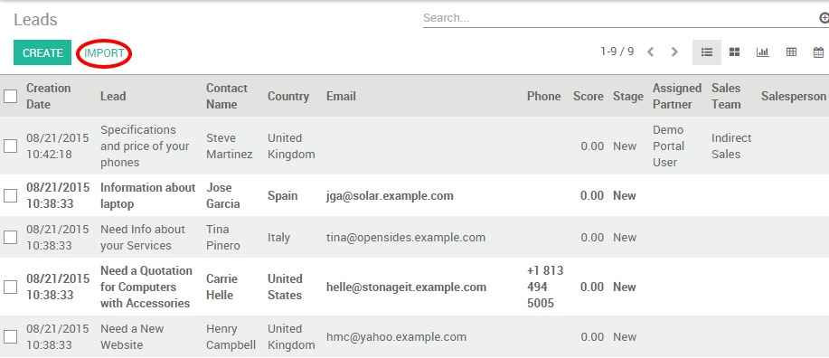

In Odoo CRM, you can import a database of potential customers, for instance for a cold emailing or cold calling campaign, through a CSV file. You may be wondering if the best option is to import your contacts as leads or opportunities. It depends on your business specificities and workflow:
- Some companies may decide to not use leads, but instead to keep all information directly in an opportunity. For some companies, leads are merely an extra step in the sales process. You could call this extended (start from lead) versus simplified (start from opportunity) customer relationship management.
- Odoo perfectly allows for either one of these approaches to be chosen. If your company handles its sales from a pre qualification step, feel free to activate first the lead stage as described below in order to import your database as leads
Activate the lead stage
By default, the lead stage is not activated in Odoo CRM. If you want to import your contacts as leads rather than opportunities, go to , select the option use leads if… as shown below and click on Apply.

This activation will create a new submenu from which you will be able to import your contacts from the Import button (if you want to create a lead manually, click here)
Import your CSV file
On the new submenu , click on Import and select your Excel file to import from the Choose File button. Make sure its extension is .csv and don't forget to set up the correct File format options (Encoding and Separator) to match your local settings and display your columns properly.
Note
If your prospects database is provided in another format than CSV, you can easily convert it to the CSV format using Microsoft Excel, OpenOffice / LibreOffice Calc, Google Docs, etc.

Select rows to import
Odoo will automatically map the column headers from your CSV file to the corresponding fields if you tick The first row of the file contains the label of the column option. This makes imports easier especially when the file has many columns. Of course, you can remap the column headers to describe the property you are importing data into (First Name, Last Name, Email, etc.).

Tip
If you want to import your contacts as opportunities rather than leads, make sure to add the Type column to your csv. This column is used to indicate whether your import will be flagged as a Lead (type = Lead) or as an opportunity (type = Opportunity).
Click the Validate button if you want to let Odoo verify that everything seems okay before importing. Otherwise, you can directly click the Import button: the same validations will be done.
Note
For additional technical information on how to import contacts into Odoo CRM, read the Frequently Asked Questions section located below the Import tool on the same window.
See also